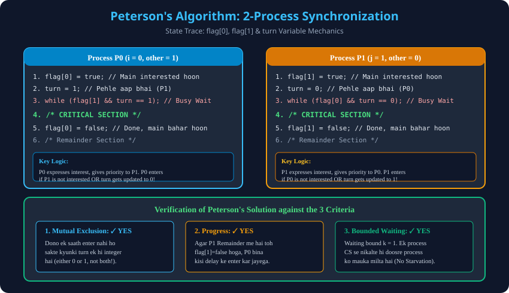

Syllabus Coverage: Gateway Classes Slides 25–39 | 2-Process Software Solution, Step-by-Step Code Trace, Mathematical Proofs.
boolean flag[2] = {false, false}; — Process intention array (flag[i] = true means Pi is interested).int turn; — Decides tie-breaking priority when both processes contend simultaneously.
// Process P0 Code
flag[0] = true;
turn = 1;
while (flag[1] && turn == 1); // Busy waiting
/* CRITICAL SECTION */
flag[0] = false;
/* Remainder Section */
// Process P1 Code
flag[1] = true;
turn = 0;
while (flag[0] && turn == 0); // Busy waiting
/* CRITICAL SECTION */
flag[1] = false;
/* Remainder Section */| Criterion | Status | Mathematical / Logical Proof |
|---|---|---|
| Mutual Exclusion | ✓ Satisfied | Variable turn cannot be both 0 and 1 at the same nanosecond. Only one process can evaluate while loop to false. |
| Progress | ✓ Satisfied | If P1 is in Remainder, flag[1] == false, allowing P0 to enter immediately without delay. |
| Bounded Waiting | ✓ Satisfied | Bound $k=1$. P0 exiting sets flag[0]=false; if re-requesting, sets turn=1, granting P1 immediate entry. |